电磁学
静电学
静电场
-
库伦定律
真空中点电荷$1$对点电荷$2$的作用力为：
$$ \vec{F}_{12} = \frac{1}{4\pi\varepsilon_0} \frac{q_1q_2}{r^2}\hat{r}_{12}~. $$点电荷的场强：
$$ \vec{E} = \frac{1}{4\pi\varepsilon_0}\frac{q}{r^2}\vec{e}_r~. $$电场强度满足叠加原理
$$ \vec{E}_{\text{总}} = \sum_i \vec{E}_i~, $$设$\rho$为带电体的电荷密度，则$\mathrm{d}q = \rho \mathrm{d}V$，该带电体产生的场强为
$$ \vec{E} = \iiint_V \frac{1}{4\pi\varepsilon_0} \frac{\rho}{r^2}\vec{e}_r\mathrm{d}V~. $$ -
电场线
-
始于正电荷/无穷远，终于负电荷/无穷远；
-
沿电场线切线方向为场强方向，疏密代表场强大小；
-
静电学中电场线永不闭合，永不相交。
-
-
高斯定理
电通量：表示穿过曲面$S$的电场线数目，定义为
$$ \mathrm{d}\Phi = \vec{E}\cdot \mathrm{d}\vec{S}, \Phi= \iint_S \vec{E}\cdot \mathrm{d}\vec{S}~. $$立体角：$\mathrm{d}\Omega = \frac{\hat{r}\cdot \mathrm{d}\vec{S}}{r^2}, \Omega = \iint\frac{\hat{r}\cdot \mathrm{d}\vec{S}}{r^2} =\iint\frac{\cos \theta \mathrm{d}S}{r^2} $，对于封闭曲面
$$ \Omega = \oiint_S \frac{\cos \theta \mathrm{d}S}{r^2} = 4 \pi~. $$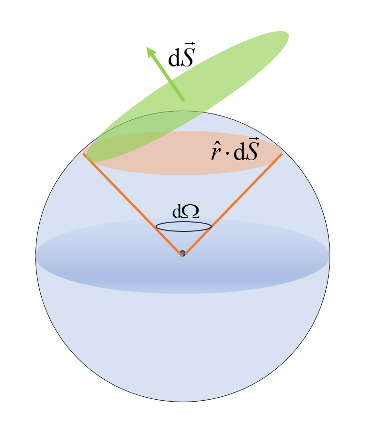
对于封闭曲面的电通量：
$$ \oiint_S \vec{E}\cdot\mathrm{d}\vec{S} = \frac{q}{4\pi\varepsilon_0}\oiint_S \frac{\cos \theta \mathrm{d}S}{r^2} = q/\varepsilon_0~. $$高斯定理：
$$ \oiint_S \vec{E}\cdot\mathrm{d}\vec{S} = q/\varepsilon_0 = \frac{1}{\varepsilon_0}\sum_i q_i~, $$高斯定理微分形式*：
$$ \begin{aligned} \oiint_S \vec{E}\cdot\mathrm{d}\vec{S}&=\iiint_V \nabla\cdot\vec{E}\mathrm{d}V = \frac{1}{\varepsilon_0}\iiint_V \rho \mathrm{d}V \\ &\Rightarrow \nabla\cdot \vec{E} = \rho/\varepsilon_0~. \end{aligned} $$注意点
- 库伦定律只适用于静电场，高斯定理不仅适用于静电场，对于变化的电磁场也适用；
- $\Phi = 0$不能说明没有电场；
- 高斯定理一定要对封闭曲面积分；
- 高斯定理中 $q$ 仅为封闭曲面内部的电荷。
-
真空中典型场强分布
-
点电荷：
$$ E\cdot 4\pi r^2 = q/\varepsilon_0 \Rightarrow \vec{E} = \frac{1}{4\pi\varepsilon_0}\frac{1}{r^2}\vec{e}_r~. $$ -
半径为$R$的均匀带电球壳：
- 半径为$R$的均匀带电球体：
-
无穷大电荷面密度为$\sigma$平板：
$$ E = \sigma/2\varepsilon_0~. $$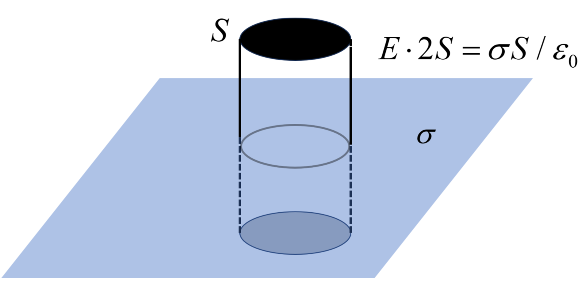
-
无穷长电荷线密度为$\lambda$的圆柱：
-
-
静电场是保守场，无旋场
-
静电力的保守性：$\oint q\vec{E}\cdot \mathrm{d}\vec{l} = 0$
-
静电场的环路定理：$\oint \vec{E}\cdot \mathrm{d}\vec{l} = 0 \Rightarrow \nabla \times \vec{E} = 0 $，可见静电场是无旋场。
-
-
电势
设$r_0$处为电势零点，则$r$处的电势为
$$ \varphi(r) = -\int_{r_0}^{r} \vec{E}\cdot\mathrm{d}\vec{l}~. $$对于保守场：$\vec{E} = -\nabla \varphi$ 对应于保守力 $\vec{F} = -\nabla V(r)$ .
电势差：$U_{ab} = \varphi_a-\varphi_b = \int_a^b \vec{E}\cdot\mathrm{d}\vec{l}$ .
电势叠加原理：$\varphi_{\text{总}}=\sum_i \varphi_i$，由于电势是标量，不需要考虑方向，代数求和即可。
-
真空中几种典型电势
- 点电荷：
- 匀强电场：
-
均匀带电球壳：
$$ \varphi(r) =\left\{\begin{matrix} \frac{1}{4\pi\varepsilon _0} \frac{q}{r}, &r>R \\ \frac{1}{4\pi\varepsilon _0} \frac{q}{R}, &r < R \end{matrix}\right. \quad \quad (\text{球壳内部为等势体.}) $$ -
均匀带电球体：
$$ \varphi(r) =\left\{\begin{matrix} \frac{1}{4\pi\varepsilon _0} \frac{q}{r}, &r>R \\ \frac{\rho R^2}{2\varepsilon_0}-\frac{\rho r^2}{6\varepsilon_0}, &r < R \end{matrix}\right. $$
-
电偶极子
-
定义：电偶极子是相距一定距离的两个等量异号的点电荷组成的系统。
-
电偶极矩：$\vec{p} = q\vec{l}$，其中$q$是一个电荷带电量的绝对值，$\vec{l}$是负电荷指向正电荷的位矢。
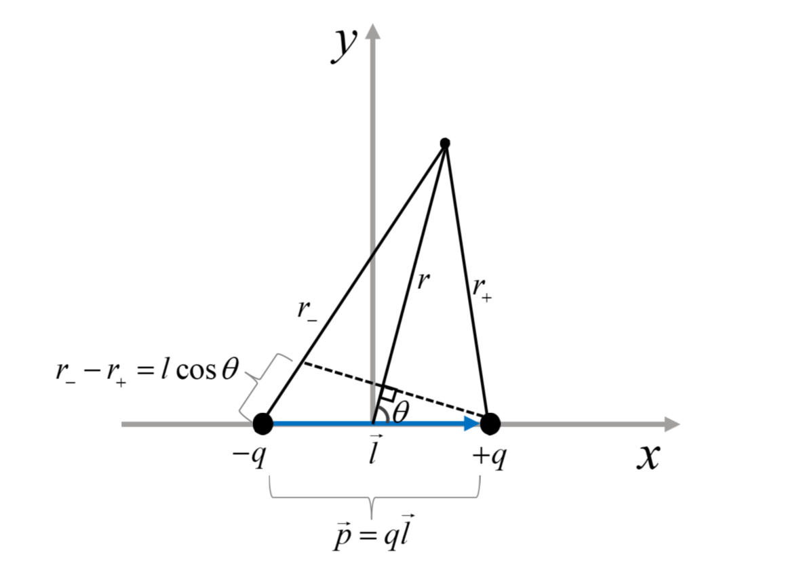 -
作用在电偶极子的力矩
$$ \vec{M}_e = \vec{p}\times\vec{E}~, $$能量为
$$ E_e = -\vec{p}\cdot \vec{E}~, $$这说明只有电偶极子方向与电场方向相同时是稳定的平衡状态；而在电偶极子与电场方向相反时，虽然力矩为零，但是为不稳定平衡状态。
-
能量处于极值为平衡状态；
-
能量处于极小值为稳定平衡状态；
-
能量处于极大值为不稳定平衡状态。
-
-
对于$r\gg l$，电偶极子的电势：
$$ \begin{aligned} \varphi & = \frac{q}{4\pi\varepsilon_0}\frac{1}{r_+}-\frac{q}{4\pi\varepsilon_0}\frac{1}{r_-}\\ & = \frac{q}{4\pi\varepsilon_0}\frac{r_--r_+}{r_- r_+} \\ & = \frac{ql}{4\pi\varepsilon_0}\frac{1}{r^2}\\ & = \frac{p\cos\theta}{4\pi\varepsilon_0 r^2}~. \end{aligned} $$ -
$x$轴上的电场$(x\gg l)$
$$ \begin{aligned} E_x &= - \nabla \varphi = -\frac{\partial}{\partial x}\frac{p}{4\pi\varepsilon_0 x^2}= \frac{\vec{p}}{2\pi\varepsilon_0 x^3}~. \\ E_x &=\frac{q}{4\pi\varepsilon_0}\frac{1}{(x-l/2)^2}\vec{e}_x- \frac{q}{4\pi\varepsilon_0}\frac{1}{(x+l/2)^2}\vec{e}_x \\ &\quad \quad= \frac{q}{4\pi\varepsilon_0}\frac{2xl}{(x-l/2)^2(x+l/2)^2}\vec{e}_x = \frac{\vec{p}}{2\pi\varepsilon_0 x^3}~. \end{aligned} $$ -
$y$轴上的电场$(y\gg l)$
$$ E_y = -2\sin \alpha \cdot \frac{1}{4\pi \varepsilon_0}\frac{q}{y^2}\hat{l} = - \frac{l}{y}\frac{1}{4\pi \varepsilon_0}\frac{q}{y^2}\hat{l}=-\frac{\vec{p}}{4\pi \varepsilon_0}\frac{1}{y^3}~. $$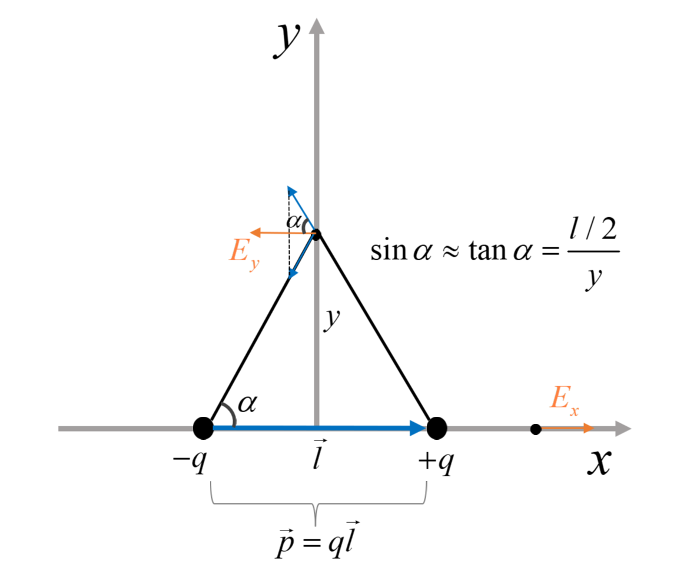
-
-
静电平衡：导体内部没有电荷作定向运动.
-
导体内部电场为零;
-
导体表面（包括内表面与外表面）$\vec{E}$方向与导体表明垂直；
-
导体表面某点处的场强大小与该处电荷面密度成正比：$E = \sigma/\varepsilon_0$ .(与无穷大板不同的是，这里导体内部无电场)；
-
导体内部无净电荷，净电荷只分布在导体表面。
-
净电荷：某物带有净电荷，指该物体所带电荷的代数和不为零。
-
-
静电屏蔽：对于静电平衡的导体，空腔内的电场线终止于内表面，外界的电场线终止于外表面，二者的变化不会互相影响(静电场中电场线不能闭合)。
-
空腔导体（无论是否接地）不受外电场的影响；
-
接地空腔导体的外部空间不受内电场的影响。
-
-
金属（导体）与电介质的区别
- 金属（导体）：只含有自由电子；
- 电介质：几乎不存在自由电子，放入电场中会出现极化电荷/束缚电荷。
-
电介质
- 无极分子的位移极化：正负电荷被扯开；
- 有机分子的转向极化：宏观上会一定程度地出现取向；
-
电介质中的场强由于极化电荷导致附加电场的出现，使得总电场发生变化（一般变小，附加电场总是与原电场方向相反）：
$$ \vec{E} = \vec{E}_0+\vec{E}' = \vec{E}_0/\varepsilon_r~. $$ -
电介质中场强的高斯定理：
$$ \oiint_S \vec{E}\cdot \mathrm{d}\vec{S} = \frac{Q_0}{\varepsilon_0\varepsilon_r}~, $$其中$Q_0$为自由电荷。
-
极化强度：反映电介质内部极化程度的物理量；实验表明，对于各向同性的电介质，极化强度与总电场强度成正比:
$$ \vec{P} = \chi_e \varepsilon_0 \vec{E} = (\varepsilon_r-1)\varepsilon_0\vec{E}~, $$其中$\chi_e = \varepsilon_r-1$为电极化率。
-
附加电场与极化强度成正比：
$$ \vec{E}' = -\vec{P}/\varepsilon_0~. $$ -
电位移强度：
$$ \vec{D} = \varepsilon_0\vec{E}+\vec{P} = \varepsilon_0\varepsilon_r \vec{E}~. $$ -
电位移强度的高斯定理：
$$ \oiint_S \vec{D}\cdot\mathrm{d}\vec{S} = Q_0~. $$这里不再出现真空介电常数$\varepsilon_0$与相对介电常数$\varepsilon_r$，且$Q_0$仅仅指自由电荷.
-
逻辑关系如下：
-
电介质表面在有外电场的情况下会出现极化电荷：$Q_{\text{总}}=Q_0 + Q_{\text{极化}}$
-
我们可以（马后炮的角度）知道极化电荷为：
$$ {Q_0+Q_{\text{极}}\over \varepsilon_0 } = {Q_0 \over \varepsilon_0\varepsilon_r} \Rightarrow Q_{\text{极}} = Q_0\left({1\over \varepsilon_r}-1 \right)~, $$这里$Q_0$是自由电荷，$Q_{\text{极}}$电性与$Q_0$相反。
这个关系是通过电介质中的高斯定理得到的，本质上$\varepsilon= \varepsilon_0\varepsilon_r$的出现就是极化电荷的修正效应。
-
极化电荷会改变电场，$\vec{E} = \vec{E}_0 + \vec{E}’$，这样有
这里也可以定义出电介质$\vec{D} = \varepsilon \vec{E} =\varepsilon_0 \vec{E}_0$，其高斯定理为
$$ \oint_S \vec{D}\cdot d\vec{S} = Q_0~. $$极化电场为：
$$ \vec{E}' = \vec{E}-\vec{E}_0 = - (\varepsilon_r-1)\vec{E}~, $$- 极化电荷强度是由极化电荷电偶极子定义的，由于电偶极子方向的定义（负电荷指向正电荷），其与极化电场方向相反，大小成正比：
其中$\chi_e = \varepsilon_r -1$ . 记住极化强度与电位移是同量纲的$[\vec{P}]=[\vec{D}]$ .
-
$\vec{D},\vec{E},\vec{P}$ 的关系可以根据$\vec{E}=\vec{E}_0+\vec{E}’$同时乘上$\varepsilon_0$得到：
$$ \varepsilon_0\vec{E} = \vec{D}-\vec{P}~\Rightarrow \vec{D} = \varepsilon_0\vec{E}+\vec{P}~. $$
-
-
真空中孤立导体的电容
-
孤立导体的电容：衡量孤立导体容纳电荷的能力。
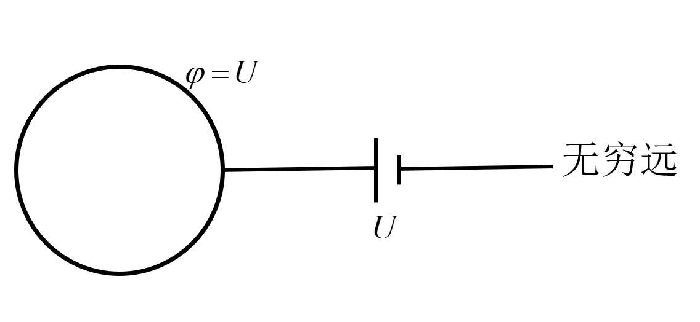电源电压为$U$，如果把电源撤去，导体电势为$\varphi = U$，设带正电荷为$Q$，则：
$$ \varphi=U = -\int_{\infty}^{R} \frac{Q}{4\pi\varepsilon_0r^2}\mathrm{d}r = \frac{Q}{4\pi\varepsilon_0 R}\Rightarrow Q\propto \varphi ~. $$可见导体带电多少与电势成正比，则定义孤立导体的电容：
$$ C = \frac{Q}{\varphi}~. $$孤立导体的电容与其形状、零势能点有关，与其带电量无关，电容单位为法拉$F$ .
-
-
电容器
-
平行板电容器
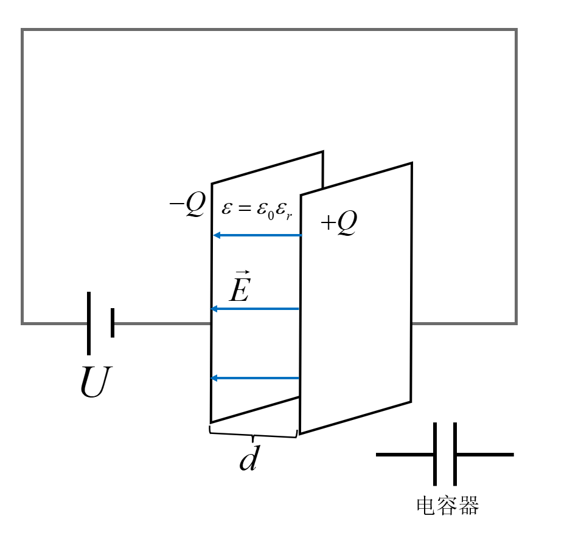与孤立导体电容类似，平行板电容器的电容指衡量一定电压下电容器贮存电荷的能力：
$$ C = Q/U~. $$在理想情况下，由于电容器之间的电场是匀强电场 $E = U/d$，且由高斯定理可得
$$ E = \frac{\sigma}{\varepsilon_0\varepsilon_r} = \frac{Q}{\varepsilon_0\varepsilon_rS}=\frac{U}{d}\Rightarrow C=\frac{Q}{U} = \frac{\varepsilon_0\varepsilon_r S}{d}~. $$ -
圆柱形电容器：单位长度电荷密度为$\lambda$，高$L$，内径为$a$，外径为$b$，电容为
$$ C=\frac{Q}{U}=\frac{\lambda L}{\int_a^b\frac{\lambda}{2\pi\varepsilon}r\mathrm{d}r}=\frac{2\pi\varepsilon L }{\ln {b\over a}}~. $$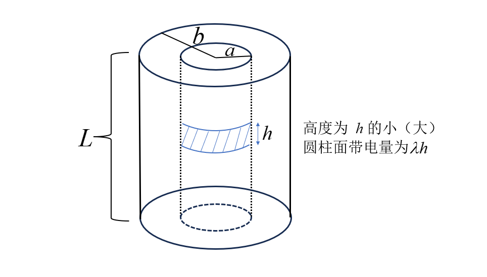
-
-
电容器的串并联
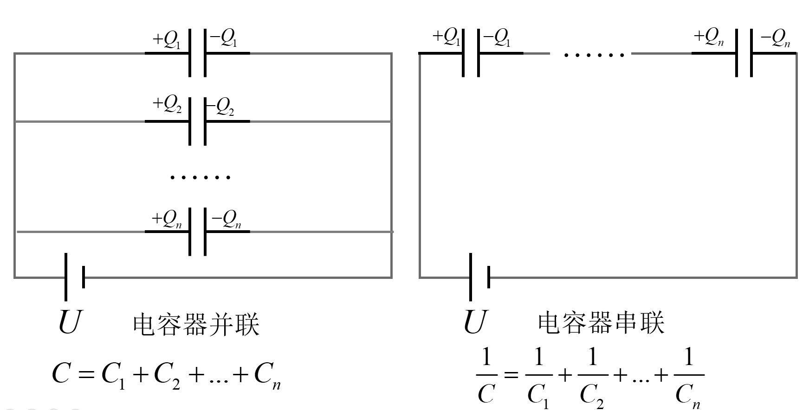-
并联：
$$ C=\frac{Q_1+Q_2+...+Q_n}{U}=C_1+C_2+...+C_n~. $$ -
串联：
$$ \frac{1}{C} = \frac{U_1+U_2+...+U_n}{Q}=\frac{1}{C_1}+\frac{1}{C_2}+...+\frac{1}{C_n}~. $$
-
-
静电场的能量与能量密度
-
电容器的电能： 由 $ \mathrm{d} W= U \mathrm{d}q = \frac{q}{C} \mathrm{d} q $ ，且 $E=\int \mathrm{d} W $ ，可得
$$ W_e=\frac{1}{2}\frac{Q^2}{C}=\frac{1}{2}CU^2~. $$ -
单位体积电场电场所拥有的能量：
$$ w_e = \frac{1}{2}\vec{D}\cdot\vec{E}=\frac{1}{2}\varepsilon E^2~. $$由平行板电容器产生的匀强电场 $E =Q/\varepsilon S$ ，电容 $C=\varepsilon S/d$ 可得 $W_e = \frac{1}{2}\frac{\varepsilon S}{d}(E\cdot d)^2=\frac{1}{2}\varepsilon E^2 \cdot Sd$ ，故能量密度为 $w_e=W_e/V=\frac{1}{2}\varepsilon E^2$ .
-
从量纲的角度理解，能量的量纲 $[\text{能量}]=[EQL]$ ，如果把电荷用 $\varepsilon_0 $ 和电场表示有
$$ [E] = \left[{Q\over \varepsilon_0 L^2 }\right] \Rightarrow [Q] = [\varepsilon_0 EL^2]~, $$那么对于${1\over 2}\varepsilon_0 E^2$而言有：
$$ [E\cdot \varepsilon_0 E] = [E\cdot QL^{-2}]=[E QL\cdot L^{-3}]=[\text{能量}\cdot L^{-3}]~, $$可见，$w_e = \frac{1}{2}\varepsilon_0 E^2$ 有着能量密度的量纲，在电介质中 $\varepsilon_0 \to \varepsilon $.
- 从另外一个角度来看，对于一束光其随身携带能量，但是并不携带电荷，因此可以认为电磁场本身具有能量，能量并不集中在场源（电荷，光源），对于能量大小由该位置的电磁场大小决定，对于电场的能量，由$E$决定，那么根据量纲其表达式最可能是 $w_e = \frac{1}{2}\varepsilon_0 E^2$ .
-
静磁学
“静"意味着物理量不随时间变化。
-
安培定律
-
电流元：通有电流的一小段导线，方向为电流的指向（注意电流是标量，没有方向），通常写为$Id\vec{l}$ .
-
安培定律：对于电流元 $I_1d\vec{l}_1$ 和 $I_2 d\vec{l}_2 $ ，其距离为 $\vec{r} _{12}$ ，则电流元 $I _1 d\vec{l} _1$ 对电流元 $I _2 d \vec{l} _2 $ 的相互作用力为：
$$ d\vec{F}_{12} = {\mu_0\over 4\pi}{I_2d\vec{l}_2\times(I_1d\vec{l}_1\times \hat{r}_{12})\over r_{12}^2 } $$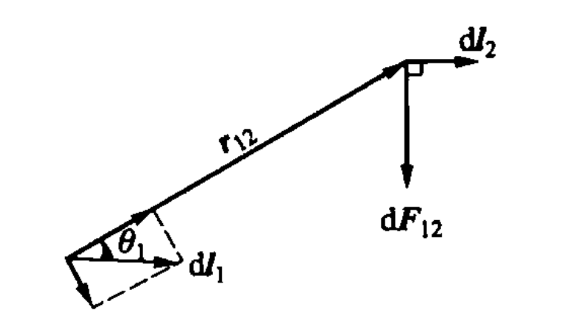虽然两个电流元之间的作用力不满足牛顿第三定律（当 $I _1 d \vec{l} _1 \perp I _2d\vec{l} _2 // \hat{r} _{12}$ ），但是电流元在现实中不会单独存在，所以这个否定没有实际的物理意义。对于两个闭合回路，其作用力是满足牛顿第三定律的。
-
两根无限长平行直导线，距离为$d$，其中一根长为$L$的导线段所受另外一根（无限长）导线的作用力大小为：
电流同向时两导线相互吸引，反向时两导线互相排斥。
-
-
毕奥—萨伐尔定律
对于电流元$Id\vec{l}$产生的磁场：
$$ d\vec{B} = {\mu_0\over 4\pi}{Id\vec{l}\times \vec{e}_r\over r^2}~. $$ -
常见的磁场分布
- 无限长通电直导线：
其中$I$为电流大小，$r$为该点位置距离导线的距离，方向沿切向，磁感线呈同心圆状。（右手法则）
- 无限长直密绕通电螺线管：
其中$n$为单位长度的匝数，管外没有磁场，管内磁场是均匀的，方向用右手螺旋判断。
-
半无限长螺线管在端口处的磁感应强度：$B = {1\over 2}\mu_0 nI$ .
-
通电螺线环：
$$ B = {\mu_0 NI\over 2\pi r}~, $$其中$r$为管内某点距螺线环圆心的距离，管外没有磁场；当管的内径与外径差别不大时可以认为管内磁场均匀（与无限长直密绕通电螺线管相同），管内磁场为$B=\mu_0 n I$ .
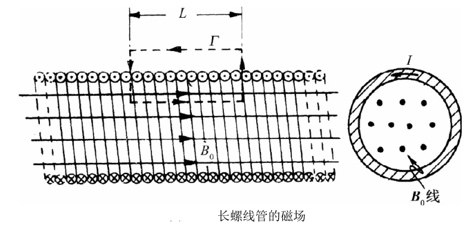 -
半径为$R$，圆心角为$\theta$的圆弧形电流在圆心处的磁场为：
$$ B = {\mu_0 I \theta\over 4 \pi R}~. $$
-
磁场的基本性质
-
高斯定理：
$$ \oiint_S \vec{B}\cdot d\vec{S} = 0~,\quad \nabla\cdot \vec{B}=0~. $$磁场无源，磁感线闭合，注意这里是闭合曲面。
-
安培环路定理：
$$ \oint_l \vec{B}\cdot d\vec{s} = \mu_0 I~, $$磁场有旋，这里是闭合环路，需要根据电流的方向取正负号。
-
-
安培力，洛伦兹力与磁力矩
-
安培力：对于整个闭合回路所受的安培力为
$$ \vec{F} = \oint Id\vec{l}\times \vec{B}~, $$任意闭合线圈在匀强磁场中受力为$0$，对于$A$向$B$的任意形状曲线电流$I$所受合力等于$AB$直导线所受安培力$\vec{F} = I\vec{L}\times \vec{B}$ ，安培力方向可以简记为**$I$指向$B$，大拇指指向洛伦兹力**。
-
洛伦兹力：
$$ \vec{F} = q\vec{v}\times \vec{B}~, $$注意$q$的正负性，洛伦兹力永远与速度垂直，因此洛伦兹力（整个力）永不做功。
-
（磁偶极子）磁力矩：
$$ \vec{M}_b = \vec{m}\times \vec{B}~, $$其中$\vec{m} = IS\vec{e}_n$为线圈的磁矩，$\vec{e}_n$是线圈平面的法向量。如果线圈为$N$匝，则$\vec{M} = NIS\vec{e}_n\times \vec{B}$ .
磁偶极子的能量：
$$ E_b =-\vec{m}\cdot\vec{B}~, $$这说明磁偶极子（线圈）与磁场方向相同时为稳定的平衡状态；线圈与磁场方向相反时虽然不受力矩作用，但是这个状态不稳定。
-
能量处于极值为平衡状态；
-
能量处于极小值为稳定平衡状态；
-
能量处于极大值为不稳定平衡状态。
-
-
-
磁通量
对于非闭合曲面的磁通量：
$$ \Phi = \iint_S \vec{B}\cdot d\vec{S}~, $$对于$N$匝线圈，其中每一匝的磁通量都为$\Phi$，则总磁通量为$\Phi_{tot} = N\Phi$ .
-
电磁感应基本定律
-
感应电动势：
$$ \mathscr{E} = -{d\Phi_{tot}\over dt} = -N{d\Phi\over dt}~, $$楞次定律：表达式中的负号表明感应电动势产生的磁通量总是阻碍原磁通量的变化。
-
发生电磁感应的条件
-
磁场发生变化（感生电动势）.
-
面积变化（动生电动势） .
-
-
动生电动势
-
定性分析：线圈切割磁感线运动 $\to$ 回路磁通量对应的面积变化 $\to$ 产生感应电动势 $\to$ 产生感应电流 $\to$ 感应电流产生安培力 $\to$ 原切割磁感线运动受到阻碍 .
-
对于任意导体以任意速度在任意磁场中运动，其动生电动势为
$$ \mathscr{E} = \int_-^+ (\vec{v}\times \vec{B})\cdot d\vec{l}~. $$ -
对于单根导体棒在匀强磁场中平动：
$$ \mathcal{E} = \vec{v}\times \vec{B}\cdot \vec{l}~, $$其中$\vec{v}$为导体棒的运动速度，$l$为导体棒的长度，$\vec{B}$为磁感应强度，$\vec{v},\vec{l},\vec{B}$两两垂直，则有$\mathscr{E}=Blv$，指向与$\vec{v}\times\vec{B}$方向一致，电动势的负极就是矢量$\vec{v}\times\vec{B}$的起点，正极就是$\vec{v}\times\vec{B}$的终点 .
-
安培力为：
$$ \vec{F}=-BIL\hat{v} = -{B^2l^2v\over R}\hat{v} ~, $$上式中$\hat{v}$表示速度方向，负号代表安培力的方向与速度方向相反 .
-
-
-
感生电动势
若磁场$B$随时间变化，并且垂直穿过闭合回路$S$（不垂直投影到垂直方向即可），当闭合回路$S$不变时，有
$$ \mathscr{E} = -N{d\Phi\over dt}=-NS{\partial B\over \partial t}~. $$-
变化的磁场激发出涡旋电场，且涡旋电场不是静电场，故涡旋电场的电场线可以闭合。
-
对于涡旋电场的分布：
对于半径为$R$的圆形匀强磁场区域有
$$ E = {1\over 2}{\partial B\over \partial t}r~,\quad r\le R~. $$ 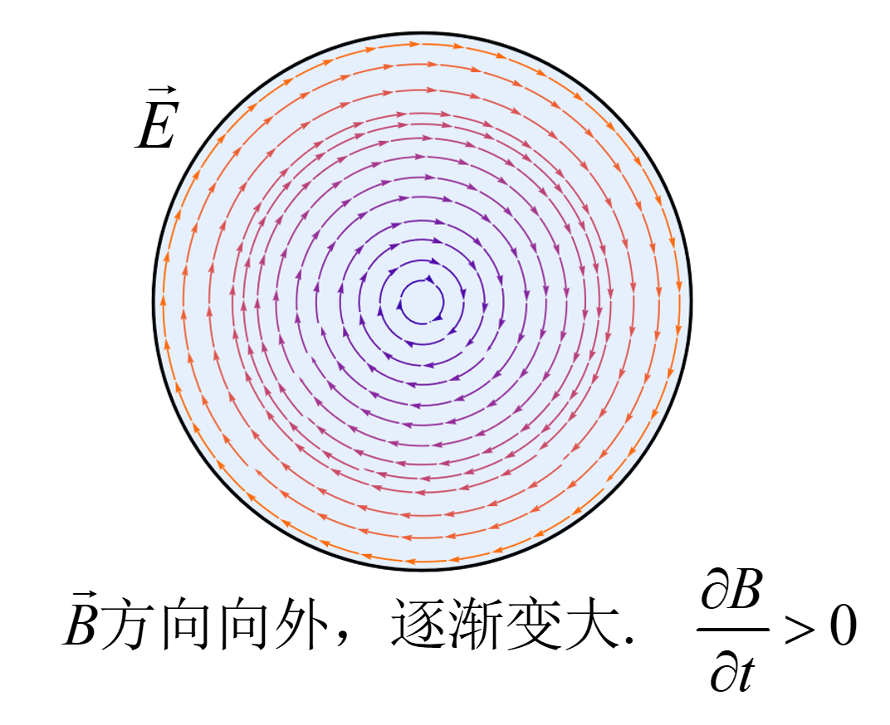 -
-
电感
-
自感：回路对自身电流变化产生感生电动势的现象，
$$ \mathscr{E} = -L{dI\over dt}~, $$其中$L = N\Phi/I$为自感系数 . 自感系数一定是正的，因为自感电动势一定会阻碍电流变化，物理意义为体现回路保持电流状态不变的“惯性”。
-
互感：两个线圈相应彼此电流变化的现象，线圈$2$响应线圈$1$中电流变化的感生电动势为
$$ \mathscr{E} = -M_{21}{dI_1\over dt}~, $$其中$M_{21}$为互感系数，且$M_{21}=M_{12} = \Phi_{21}/I_1=\Phi_{12}/I_2$ . 其中$\Phi_{21}$表示$I_1$激发的磁场穿过线圈$2$的磁通量，$\Phi_{12}$表示$I_2$激发的磁场穿过线圈$1$的磁通量。
-
电感的能量储存在电感的磁场中：
$$ W_B = \int_0^t UI'dt'=\int_0^ILI'dI'={1\over 2}LI^2~. $$-
能量密度：$w_b = B^2/2\mu_0$ .
-
两个线圈的总磁场能量：$W_B = {1\over2}L_1I_1^2+{1\over2}L_2I_2^2+MI_1I_2$ .
-
-
-
磁介质
-
磁场强度$ \vec{H} $：
$$ \vec{H} = \vec{B}/\mu~, $$外部施加的磁场，不受磁介质影响.
-
磁化强度$ \vec{M} $：
$$ \vec{M} = \chi_M \vec{H}~, $$
-
单位体积内的磁偶极矩总和，反映物质被磁化的程度.
-
磁感应强度$ \vec{B} $：
$$ \vec{B} = \mu_0 (\vec{H}+\vec{M})~, $$其中 $\mu_0$ 是真空磁导率。
-
磁导率$ \mu $：
$$ \mu = (1+\chi_M)\mu_0 = \mu_r\mu_0~, $$- $\chi_m$：磁化率
- $\mu_r$：相对磁导率
- 在磁介质中，把真空中公式里的$\mu_0\to \mu = \mu_0\mu_r$即可 .
-
记忆公式的逻辑
-
与电介质不同，在磁介质中一般考虑顺磁性物质，这时$\vec{B}’$的方向与$\vec{B}_0$方向相同，即磁场变大了。
-
磁介质表面会产生磁化电流：$I = I_0+I’$ ；
-
磁场为原自由电流$I_0$产生的磁场$B_0$与磁化电流$I’$产生的磁场$B’$之和：$\vec{B}=\vec{B}_0+\vec{B}’$ ;
-
磁场的安培环路定理
$$ \oint_L \vec{B}\cdot d\vec{l} = \mu_0(I+I')=\mu I_0~,\quad \oint_L \vec{B}_0\cdot d\vec{l} = \mu_0 I_0~. $$由上2式可定义磁场强度$\vec{H} = {\vec{B}\over \mu} = {\vec{B}_0\over \mu_0}$，其安培环路定理为：
$$ \oint_L \vec{H}\cdot d\vec{l} = I_0~. $$ -
根据$\vec{B}_0 = \mu_0 \vec{B}/\mu = \vec{B}/\mu_r$可得$\vec{B}’ = \vec{B}(1-{1\over \mu_r})$ ;
-
记住磁化强度$\vec{M} = \vec{B}’/\mu_0$，磁偶极子的方向与磁场方向相同，不需要加负号，那么有
$$ \vec{M} = {\vec{B}\over \mu_0}-\vec{H} = \vec{H}(\mu_r-1)=\chi_M\vec{H}~. $$ -
$\vec{B},\vec{H},\vec{M}$之间的关系可由$\vec{B}=\vec{B}_0+\vec{B}^\prime$同时除以$\mu_0$得到：
$$ {\vec{B}\over \mu_0} = \vec{H}+\vec{M}~\Rightarrow \vec{H} = {\vec{B}\over \mu_0} - \vec{M}~. $$
-
-
Maxwell方程组
- 电场有源，电场的源是电荷；
- 变化的磁场会产生电场；
- 磁场没有源，至今未发现磁单极子；
- 修正的安培环路定理，其中（全）电流分为传导电流$I$与位移电流。
位移电流指的是随时间变化的电场产生的效应，即
$$ \varepsilon_0\int_s \frac{\partial \vec{E}}{\partial t}\cdot \mathrm{d}\vec{S}=\int_s \frac{\partial \vec{D}}{\partial t}\cdot \mathrm{d}\vec{S}~, $$方向是电场随时间变化的方向，即与$\vec{E}(t+\Delta t,\vec{r})-\vec{E}(t,\vec{r})$方向相同。
-
恒定电流条件：
$$ {dQ\over dt} = I = \oint_S \vec{j}\cdot d\vec{S} $$
电磁学公式总表
| 类别 | 公式名称 | 表达式与说明 |
|---|---|---|
| 矢量微积分公式 | 矢量微分算子 | $\nabla = (\frac{\partial}{\partial_x},\frac{\partial}{\partial_y},\frac{\partial}{\partial_z})$ |
| 梯度 | $ \nabla f $ | |
| 散度 | $ \nabla \cdot \vec{A} $ | |
| 旋度 | $ \nabla \times \vec{A} $ | |
| 散度定理（高斯） | $ \oint_{S} \vec{A} \cdot d\vec{S} = \int_V (\nabla \cdot \vec{A}) dV $ | |
| 斯托克斯公式 | $ \oint_{L} \vec{A} \cdot d\vec{l} = \int_S (\nabla \times \vec{A}) \cdot d\vec{S} $ | |
| 静电力与电场 | 库仑定律 | $ \vec{F} = \dfrac{1}{4\pi \varepsilon_0} \dfrac{q_1 q_2}{r^2} \hat{r},\quad $ |
| 点电荷电场 | $ \vec{E} = \dfrac{1}{4\pi \varepsilon_0} \dfrac{q}{r^2} \hat{r} $ | |
| 电场叠加原理 | $ \vec{E}_{\text{总}} = \sum \vec{E}_i $ | |
| 高斯定理 | 电通量 | $ \Phi_E = \int \vec{E} \cdot d\vec{A} $ |
| （有电介质$\varepsilon_0\to \varepsilon =\varepsilon_r\varepsilon_0$） | 高斯定理（积分） | $ \oint \vec{E} \cdot d\vec{A} = \dfrac{Q_{\text{in}}}{\varepsilon_0} $ |
| 高斯定理（微分） | $ \nabla \cdot \vec{E} = \dfrac{\rho}{\varepsilon_0} $ | |
| 电势与能量 | 电势定义 | $ \varphi(r) = - \int_{r_0}^r \vec{E} \cdot d\vec{l} $ |
| 电势差 | $ U_{ab} = \varphi_a-\varphi_b = \int_a^b \vec{E}\cdot\mathrm{d}\vec{l} $ | |
| 电场与电势关系 | $ \vec{E} = -\nabla \varphi $ | |
| 点电荷电势 | $ \varphi = \dfrac{1}{4\pi \varepsilon_0} \dfrac{q}{r} $ | |
| 电偶极子 | 偶极矩 | $ \vec{p} = q \vec{l} $（$\vec{l}$为负电荷指向正电荷的方向） |
| 电势（远场） | $ \varphi = \dfrac{1}{4\pi \varepsilon_0} \dfrac{\vec{p} \cdot \hat{r}}{r^2} $ | |
| 电场（轴上） | $ \vec{E} = \dfrac{1}{4\pi \varepsilon_0} \dfrac{2p}{r^3} $ | |
| 力矩 | $\vec{M}_e=\vec{p}\times\vec{E}$ | |
| 能量 | $E_e = - \vec{p}\cdot \vec{E}$ | |
| 电容与能量 | 孤立导体电容 | $ C = \dfrac{Q}{\varphi} $ |
| （有电介质$\varepsilon_0\to \varepsilon =\varepsilon_r\varepsilon_0$） | 平行板电容 | $ C = \dfrac{\varepsilon_0 S}{d} $ |
| 圆柱电容 | $ C = \dfrac{2\pi \varepsilon_0 h}{\ln(b/a)} $ | |
| 电容储能 | $ W_E = \dfrac{1}{2} C U^2 $ | |
| 能量密度 | $ w_e = \dfrac{1}{2} \varepsilon_0 E^2 $ | |
| 电介质与电位移 | 极化强度 | $ \vec{P} = \varepsilon_0 \chi_e \vec{E} $（$\vec{E}$是最后的总电场强度） |
| 电位移矢量 | $ \vec{D} = \varepsilon_0 \vec{E} + \vec{P} $ | |
| 电位移高斯定理 | $ \oiint \vec{D} \cdot d\vec{S} = Q_{\text{自由}} $ | |
| 磁场 | 比奥萨法尔定律 | $d\vec{B} = \dfrac{\mu_0}{4\pi} \cdot \dfrac{I d\vec{l} \times \hat{r}}{r^2}$ |
| （有磁介质$\mu_0\to \mu=\mu_r\mu_0$） | 安培环路定理 | $ \oint \vec{B} \cdot d\vec{l} = \mu_0 I $ |
| 磁感线闭合 | $\oint \vec{B} \cdot d\vec{S} = 0$ | |
| 洛伦兹力 | $\vec{F} = q \vec{v} \times \vec{B}$ | |
| 安培力 | $\vec{F} = \int_L Id\vec{l}\times\vec{B} $ | |
| 磁力矩（磁偶极子） | 磁矩 | $\vec{m} = IS\vec{e}_n$ |
| 磁力矩 | $\vec{M}_b = \vec{m}\times \vec{B}$ | |
| 能量 | $E_b = -\vec{m}\cdot \vec{B}$ | |
| 感应电动势 | 感应电动势 | $\mathscr{E} = -N\dfrac{d\Phi_B}{dt}$ |
| 磁通量 | $\Phi_B = \int \vec{B} \cdot d\vec{A}$ | |
| 导体棒动生电动势 | $\mathscr{E} = B l v$（$B, l, v$ 两两垂直） | |
| 自感电动势 | $\mathscr{E} = -L \dfrac{dI}{dt}$ | |
| 互感电动势 | $\mathscr{E}=-M_{21}{d I_1\over dt}$ | |
| 电感储能 | $W_B = \dfrac{1}{2} L I^2$ | |
| （有磁介质$\mu_0\to \mu=\mu_r\mu_0$） | 磁场能量密度 | $w_b = \dfrac{1}{2\mu_0} B^2$ |
| 磁介质 | 磁感应强度 | $\vec{B} = \mu_0 (\vec{H} + \vec{M})$ |
| 磁导率关系 | $\mu = \mu_0 (1 + \chi_m) = \mu_0 \mu_r$ | |
| 磁场强度 | $\vec{H} = \dfrac{1}{\mu} \vec{B}$ | |
| 磁化强度 | $\vec{M} = \chi_m \vec{H}$ | |
| 安培环路定理 | $\oint_L \vec{H}\cdot d\vec{l} = I$ | |
| Maxwell方程组 | 高斯定理 | $\oint_S \vec{E}\cdot d\vec{S} = Q/\varepsilon_0$ |
| $\oint_S \vec{D}\cdot d\vec{S} = Q$ | ||
| 变化的磁场会产生感应电场 | $\oint_L \vec{E}\cdot d\vec{l}=-\int_S {\partial \vec{B}\over \partial t}\cdot d\vec{S}$ | |
| 磁场无源 | $\oint_S \vec{B}\cdot d\vec{S}=0$ | |
| 安培环路定理 | $\oint_L\vec{B}\cdot d\vec{l} = \mu_0 I+\mu_0\varepsilon_0 \int_S {\partial \vec{E}\over \partial t}\cdot d\vec{S} $ | |
| $\oint_L\vec{H}\cdot d\vec{l} = I+\int_S {\partial \vec{D}\over \partial t}\cdot d\vec{S} $ |